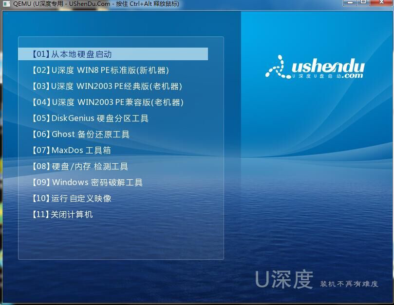
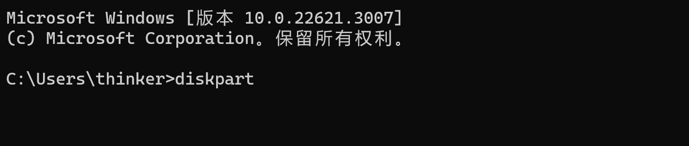

windowsXP忘记开机密码解决办法
家里的老古董windowsXP好久不用了，最近接到上级指令，得修一修能登录系统，于是穿上工作服化身修理工准备修电脑(^o^)/~（不是）
由于过于匆忙，没有留下什么截图的痕迹，我尽量清晰的说清楚修理过程的来龙去脉~~~
解决方案
1. 制作USB启动盘
准备一个空U盘，没有空U盘就需要提前备份好数据，如果只是重置密码，U盘内存2G以上即可，若需要重装系统，4G以上即可
搜索
U盘启动工具，这里使用的U深度制作工具，下载增强版
将下载后的
UShenDu_UEFI_gw.exe文件放在空U盘中，双击安装运行，智能模式按照默认选择，点击开始制作
PS：如果提示
u盘启动盘制作创建ud分区失败，解决方案是将该U盘先格式化，就可以制作了可以模拟运行一下
2. 启动装机工具
将U盘插在windowsXP上面，开机时疯狂按F12（F8 F9），即可打开启动选择界面，有几种选项，选择其中的U盘名称，我的界面中在最下方
点击U盘名称，即可进入U盘启动界面
界面如下显示，选择PE标准版，启动不了选择经典版或兼容版

点击
开始——密码管理——系统密码破解工具，打开界面显示SAM文件路径，即密码存储路径，点击打开，即列出所有用户名，点击对应的用户名并修改密码，保存修改至此，修改密码完毕，重启，即可按刚刚修改的用户名密码进行登录
3. 恢复U盘
右键此电脑，
管理—计算机管理—磁盘管理列出了所有的磁盘，我的U盘所在位置是磁盘1，具体需要看清楚到底是哪个磁盘，很重要哦，以免误删
打开cmd，输入
diskpart
选择磁盘
select disk 1，确认磁盘是否为要清空U盘list disk，清除clean
此时，U盘由原来的三个小分区变成一个大分区
右键U盘，格式化，至此恢复为普通的U盘
4. 尝试使用的方法
- 输入
Administrator，密码为空，无法登录 - 在刚开机时狂按F8，选择“带命令行的安全模式”进入，无法启动命令行模式
- 连按五次shift
- 暴力…